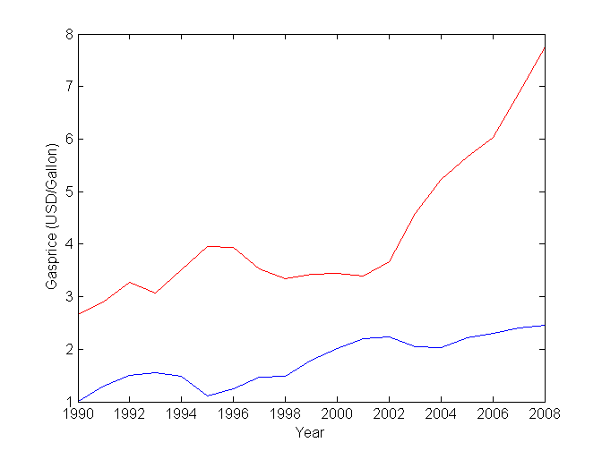
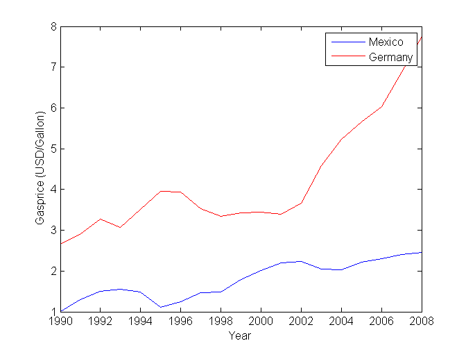
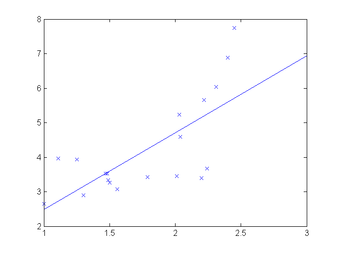
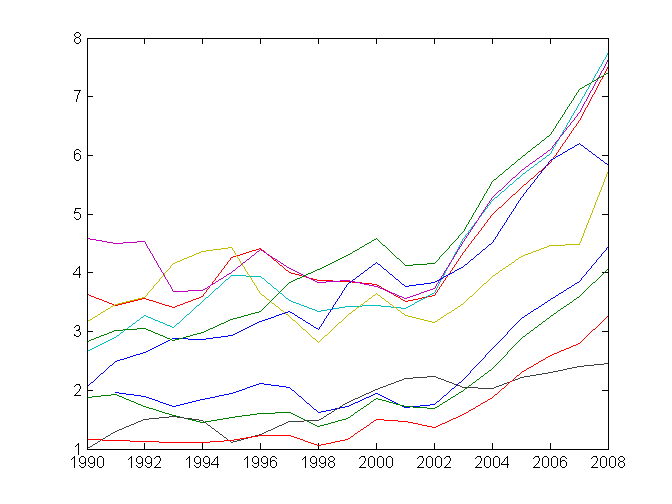
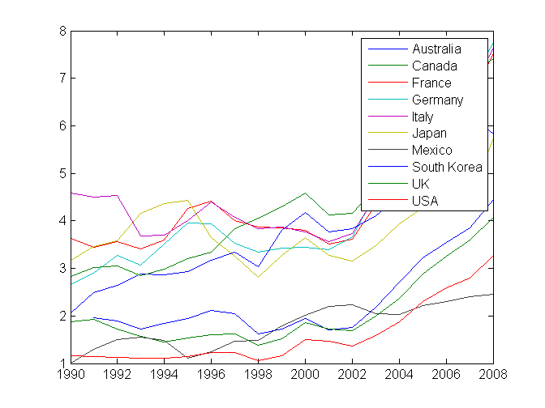

Exercise 2
Contents
2.1 Plot the Gasprices in Mexico (blue) and Germany (red) vs year.
load ../gasprices
hold off
plot(Year, Mexico)
hold on
plot(Year,Germany,'r')
xlabel('Year')
ylabel('Gasprice (USD/Gallon)')

Include a legend.
legend('Mexico','Germany')

2.2 Plot the prices in Germany vs Mexico (scatter plot) and make a linear fit
figure
plot(Mexico,Germany,'x')
p=polyfit(Mexico,Germany,1);
hold on
mxp=1:3;
plot(mxp,polyval(p,mxp));

2.3 Guess the price in Germany if the price in Mexico is 3
polyval(p,3)
ans =
6.9360
2.4 Same guess with a quadratic fit
p2=polyfit(Mexico,Germany,2);
polyval(p2,3)
ans =
11.5560
2.5 Gasprices from the command line
a) Create a vector Year, and a matrix Prices from the data matrix
Year=data(:,1);
Prices=data(:,2:end);
b) Plot Prices vs Year
figure
plot(Year,Prices)

c) Include a legend
legend(colheaders(2:end))
figure(gcf)
